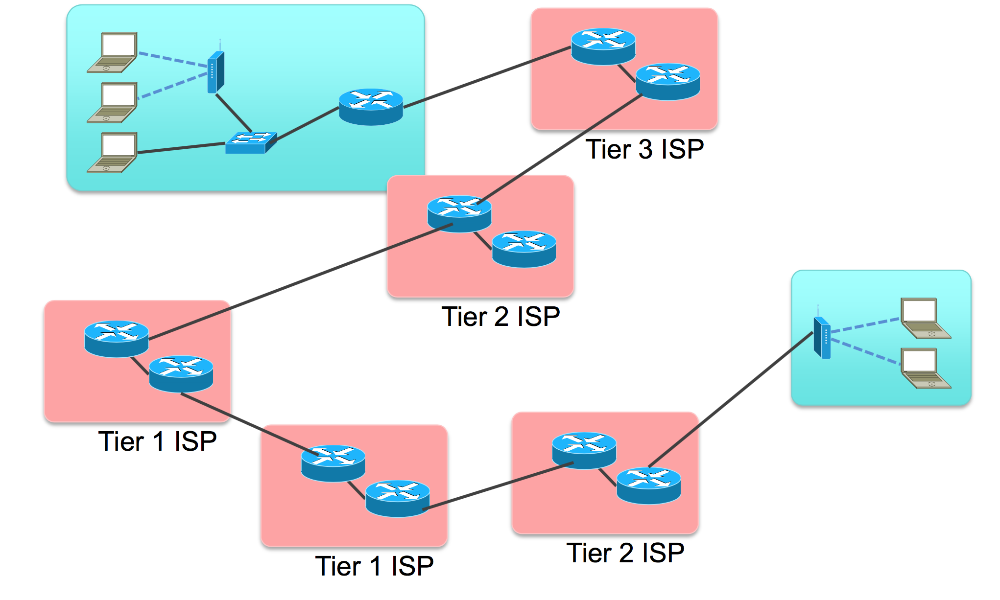

Fundamentos
A pedra fundamental da construção de sistemas distribuídos é a capacidade de comunicação entre seus componentes. No mundo de hoje, isto quer dizer que os hosts dos componentes devem possuir interfaces de rede e que estas interfaces estejam ligadas a uma rede com capacidade de roteamento de dados, estabelecendo um canal de comunicação entre os componentes. Além do canal, é também necessário que se estabeleça um protocolo de comunicação, que define as regras para que a comunicação aconteça, por exemplo, a gramática para formação de mensagens.
Também importantes, de um ponto de vista prático do desenvolvimento, são os conceitos de concorrência e paralelismo. Afinal, um componente pode necessitar manter várias "conversas" em paralelo com múltiplos outros componentes.
Neste capítulo, revisaremos de forma rápida tanto conceitos de redes de computadores quanto de concorrência e paralelismo.
Canais e Protocolos de Comunicação
Um canal de comunicação é o meio pelo qual os elementos da conversa entre os componentes do sistema distribuído são transmitidos e o protocolo são as regras codificam tal conversa. Por exemplo, quando você fala com uma pessoa, cara-a-cara, o meio de comunicação é o ar e o protocolo utilizado é a linguagem conhecida pelas duas partes, o Português por exemplo. Na prática, canais de comunicação podem ter diversas formas e características, por exemplo:
- Ponto-a-ponto
- Eficiente
- Caro para muitos nós
- Roteamento trivial
- Compartilhado
- Colisões
- Menor custo
- Roteamento mais complicado
Nas redes atuais, pode se dizer que o meio mais utilizado é provido pela arquitetura Ethernet, que trata da comunicação entre nós usando um barramento compartilhado. Sobre este meio, são usados protocolos para, por exemplo,
- Controle de acesso ao meio
- Transmissão de mensagens
- Evitar e tratar colisões
As redes Ethernet, contudo, cobrem pequenas áreas e para se ter conversas "mais interessantes", é necessário que se conecte diversas destas redes. A conversa então é feita por meio de intermediários, gateways que conectam duas ou mais redes, permitindo que mensagens de um interlocutor sejam roteadas para o outro, via tais intermediários.
Um exemplo interessante das questões ligadas à manutenção da conversa entre dois pontos é a decisão sobre o uso de comutação de pacotes (packet switching) ou de circuitos (circuit switching).
- Comutação de pacotes
- Dados divididos em pacotes
- Cada pacote viaja independentemente
- Pacotes são perdidos
- Latência variável
- Circuit switching
- Caminho dedicado
- Recursos reservados
- Pacotes de tamanho fixo
- Latência constante
Outro fator importante é a unidade máxima de transmissão (maximum transmission unit, MTU), o tamanho máximo de um pacote em determinada rede. É necessário entender que qualquer quantidade de dados maior que o MTU precisará ser dividida em múltiplos pacotes. Também é importante perceber que redes são heterogêneas, e que o vários segmentos no caminho entre origem e destino podem ter MTU diferentes, levando à fragmentação de pacotes em trânsito e, possivelmente, entrega desordenada dos mesmos.
Finalmente, há a questão importante é relativa à confiabilidade na transmissão dos elementos da conversa, isto é, se a rede deve garantir ou não que algo "dito" por um interlocutor deve garantidamente ser "ouvido" pelo outro, ou se a mensagem pode ser perdida no meio.
Felizmente boa parte da complexidade da resolução destas questões é abstraída do desenvolvedor dos sistemas distribuídos, isto é, você, lhe cabendo apenas a decisão de qual protocolo utilizar. Nas redes atuais, a conversa em componentes será feita, em algum nível, por meio dos protocolos da arquitetura Internet.
A Internet
A Internet tem este nome por usar o protocolo de interconexão de redes indepententes, o internetworking protocol, ou IP. Para a aplicação usando o IP, todas as redes se comportam como uma única e coerente rede, exceto por alguns detalhes. Os elementos que conectam as diversas redes são denominados roteadores e fazem um melhor esforço para encaminhar os pacotes de dados do remetente ao destinatário.

Se você se lembrar da pilha de protocolos de comunicação de referência OSI, lembrará que há sete camadas na mesma. Cada camada é responsável pela comunicação em um nível e serve de fundação para a funcionalidade da camada de cima, isto é, cada camada é responsável pela comunicação em um nível de abstração que serve de base para o nível imediatamente superior:
- Física: Bits
- Enlace: Frames/quadros; controle de fluxo; acesso ao meio.
- Rede: Datagramas/pacotes; roteamento
- Transporte: Controle de fluxo; fim a fim; confiabilidade; tcp e udp
- Sessão: Streams/fluxos; conexões lógicas; restart; checkpoint; http, ssl
- Apresentação: Objetos; json, xml; criptografia
- Aplicação: Aplicações; http, pop, ftp

O protocolo de cada camada inclui cabeçalhos (header) e carga (payload) e o conjunto de cabeçalho + carga de uma camada é considerado carga da camada inferior. Assim, embora tenha-se a impressão de que cada camada conversa com a equivalente do outro lado da comunicação, na prática, a comunicação desce e sobe a pilha.
Embora o IP se refira estritamente ao protocolo da camada 3 da pilha, nos referimos à pilha que usa este protocolo como a pilha IP. Comparada à pilha OSI, a IP é mais simples, como se vê na figura, pois as camadas 5 e 6 não estão presentes na pilha IP e as funcionalidades correspondentes são implementadas na camada 7, de aplicaçao.

Contudo, não tema! Estas funcionalidades podem se normalmente implementadas por meio de frameworks ou do middleware em uso. Alguns exemplos de tais funcionalidades são
- (De)Serialização
- Nomeamento
- Criptografia
- Replicação
- Invocação remota de procedimentos
A grande vantagem desta abordagem é que se pode implementar exatamente e somente as funcionalidades desejadas. Este característica é conhecida como o argumento fim-a-fim no projeto de sistemas; uma análise recente deste argumento foi feita aqui.
Como usuários da pilha IP, temos que entender como a camada 3 funciona, mas dificilmente interagiremos com algo além da camada 4, a camada de transporte.
No princípio, era o Socket
Na prática, para implementarmos a comunicação entre processos, usamos sockets. Para se definir um socket a partir de um host é necessário identificar o outro fim da comunicação, isto é, o outro host, ou melhor, uma de suas interfaces de rede. Os sockets são então a abstração dos canais de comunicação, mas como dito antes, é necessário definir também os protocolos usados por estes sockets. O primeiro protocolo é o de endereçamento, que define qual pilha de protocolos usar, na camada 3. No caso da pilha IP, usa-se o protocolo AF_INET ou PF_INET. Escolhido o protocolo,
- cada interface tem um endereço MAC, na camada 2, que a identifica entre as interfaces na mesma rede local, e
- cada interface tem um endereço IPv4/IPv6 de 32/128 bits, que o indentifica entre todos os hosts na Internet.1
Mas dentro de um host, podem haver diversas aplicações sendo executadas. Como identificar exatamente com qual se quer conversar? Isto é feito pela definição uma porta:
- Porta: inteiro de 16 bits
- Associadas a serviços pela Internet Assigned Numbers Authority, IANA.
- Portas "Bem conhecidas": 0-1023
- Portas Proprietárias: 49151
- Portas Dinâmicas: 65535
Também é necessário definir o protocolo de transporte dos dados, na camada 4. Novamente, no caso da pilha IP, pode-se usar TCP (SOCK_STREAM) ou UDP (SOCK_DGRAM).
A API usada para estabelecer a conversa via socket tem várias chamadas, que devem ser executadas na ordem certa no processo iniciando a conversa e naquele que aceita participar da mesma. Comecemos estudando o TCP.
TCP
O fluxograma da criação de um socket TCP é apresentado na seguinte figura:
Estabelecido o socket, o mesmo pode ser usado como um arquivo, isto é, lendo-se e escrevendo-se bytes. O que exatamente deve ser escrito e como o que é lido deve ser interpretado é o protocolo da camada 7, sua responsabilidade.
Vejamos um exemplo do uso de sockets, em Python, descrito no arquivo server.py.2
1 2 3 4 5 6 7 8 9 10 11 12 13 14 15 16 | |
Para executá-lo, execute o seguinte comando em um terminal.
1 | |
Em outro terminal, execute um dos dois comandos a seguir.^[O programa telnet é normalmente instalado por padrão tanto no Windows, OSX quanto no Linux. Já o netcat normalmente precisa ser instalado por você. Em alguns sistemas, em vez de netcat o comando é o nc].
1 | |
1 | |
O que está acontecendo aqui é um processo criou um socket e ficou aguardando uma conexão, usando o código em Python. Tanto o telnet quando o netcat são programas genéricos para se conversar com outro processo usando TCP/IP. Aqui, estes programas simplesmente se conectaram e imprimiram o que quer que o primeiro processo lhes tenha enviado, assumindo que correspondia a uma string, o que neste caso é correto. Simples, não é mesmo?
Em geral, denominamos o processo que fica aguardando a conexão de servidor e o processo que se conecta de cliente. Isto por quê, em geral, o servidor executa alguma tarefa, serve, o cliente, embora isto não seja necessariamente verdade.
Por completude, vamos também escrever o código do cliente, agora que você já sabe que o servidor funciona. Do lado cliente, estabelece-se uma conexão apontando-se para onde está o servidor.
1 2 3 4 5 6 7 8 9 10 11 12 13 14 | |
E para se executar o cliente, faça:
1 | |
Observe que o socket.close() encerra a conexão do lado de quem invoca. Na contraparte, invocações a socket.recv() retornam com 0 bytes lidos.
A título de comparação, em Java, a criação do socket do lado do servidor seria muito mais simples, consistindo apenas em:
1 | |
O cliente em Java também é simplificado.
1 | |
Exercício: Múltiplos Pacotes
Façamos agora uma modificação no código do servidor para que envie não uma, mas duas mensagens para o cliente. Isto é, modifique seu servidor assim
1 2 3 4 | |
Agora execute novamente o cliente e veja o que acontece. Consegue explicar o fenômeno?
Modifiquemos o cliente agora, para que tenha dois recv, assim.
1 2 3 4 5 6 7 8 | |
E agora, o que acontece? A saída é como esperava? Como explica este fenômeno e como poderia corrigí-lo?
Exercício: Ping-Pong
Modifique cliente e servidor tal que o cliente envie uma mensagem passada na linha de comando ao servidor e fique esperando uma resposta, e tal que o servidor fique esperando uma mensagem e então solicite ao operador que digite uma resposta e a envie para o cliente. O loop continua até que o usuário digite SAIR, e a conexão seja encerrada.
| Terminal 1 | Terminal 2 |
|---|---|
| python server.py | python client.py |
| Esperando conexão. | conectando-se ao servidor |
| Conectado | Conectado |
| Esperando mensagem | Digite mensagem: lalala |
| Mensagem enviada | |
| Mensagem recebida: lalala | Esperando resposta |
| Digite resposta: lelele | |
| Resposta enviada. | Resposta recebida: lelele |
| Digite mensagem: SAIR | |
| Desconectando. | |
| Conexão encerrada. | |
| Esperando conexão. |
Observe que para ler do teclado em Python 2 você deve usar x = raw_input(), enquanto que em Python 3 seria x = input(). Além disso, em Python 2, você deve remover as invocações para encode e decode.
UDP
No exemplo anterior, usamos o protocolo TCP (o padrão da API). Caso quiséssemos usar UDP, precisaríamos nos atentar a alguns detalhes.
A criação do socket é feita explicitando-se o uso de datagramas: s = socket.socket(socket.AF_INET,socket.SOCK_DGRAM)
Um servidor UDP não executa listen ou accept e, em Python, simplesmente executa data, addr = sock.recvfrom(4096) para receber o datagrama, onde data é o conteúdo recebido e addr o endereço de quem enviou o datagrama.
Neste caso, um mesmo socket é usado para manter comunicação com múltiplos interlocutores. Para enviar uma resposta a um interlocutor em específico, addr é usado: sent = sock.sendto(data, addr), onde sent é a quantidade de bytes enviados.
Além deste detalhe, é importante manter em mente outras características do UDP:
- falta de ordem
- falta de confiabilidade
- menos dados lidos que enviados.
- mais dados lidos que enviados (pode acontecer também no TCP)
Com tantas dificuldades para se usar o UDP, fica a questão: para que serve UDP?
Exercício: Ping-Pong UDP
Modifique o código do exercício Ping-Pong para usar UDP em vez de TCP na comunicação entre nós. Execute múltiplos clientes ao mesmo tempo. Como o seu servidor lida com isso? Modifique-o para mandar um "eco" da mensagem recebida de volta ao remetente.
IP-Multicast
Imagine que você tenha que enviar um stream de vídeo para um amigo mostrando como você está jogando o mais novo jogo da velha no mercado. Qual protocolo de transporte você usaria? TCP, provavelmente, já que garante a entrega ordenada dos pacotes do vídeo. Como você já sabe, o TCP envia confirmações de pacotes recebidos e usa uma janela deslizante para determinar quais pacotes reenviar, o que pode causar interrupções na execução do vídeo. Além do mais, as pessoas provavelmente preferirão perder alguns quadros que perder a sincronia com sua excitante partida. Parece que uma opção melhor seria então usar UDP, correto?
Imagine agora que os mesmos dados devam ser enviados para múltiplos destinatários (você está ficando famoso!) Com múltiplos destinatários, múltiplos controles precisariam ser mantidos no TCP, o que pode se tornar custoso; mais uma razão para usar UDP!
Para terminar, lhe darei uma razão final: IP-Multicast! Multicast, em oposição ao Unicast, é a capacidade de enviar mensagens para um grupo de destinatários, em vez de apenas um.

IP-Multicast é uma implementação desta ideia, usando umaa configuração específica do UDP, associada a recursos dos comutadores de rede, para otimizar o envio dos mesmos dados a múltiplos destinatários. Grupos são identificados por endereços IP especiais, conhecidos como Classe D (224.0.0.0-239.255.255.255), e propagados pela rede. A seguinte tabela descreve os usos das sub-faixas de endereços.3
| Endereço | Uso |
|---|---|
| 224.0.0.0-224.0.0.255 | Multicast local - Usado por protocolos L2, como EIGRP e OSPF |
| 224.0.1.0-224.0.1.255 | Multicast roteaddo - Usado por protocolos L3 |
| 232.0.0.0-232.255.255.255 | Source Specific Multicast - Receptores definem fontes confiáveis |
| 233.0.0.0-233.255.255.255 | Reservado para detentores Autonomous Systems |
| 239.0.0.0-239.255.255.255 | Reservado para IANA |
| Resto | Uso geral |
Quando um pacote é enviado para o endereço do grupo, todos os membros do grupo recebem tal mensagem. Melhor dizendo, todos os membros podem receber a mensagem, mas como estamos falando de UDP, é possível que alguns não recebam. Além disso, não há garantia qualquer sobre a ordem de recepção das mensagens.
Apenas reforçando, IP-Multicast só funciona com UDP, pois lidar com retransmissões em um grupo grande levaria a um estado imenso sendo mantido na origem dos dados. Outro ponto importante é que pelo podencial desestabilizador do IP-Multicast, ele é normalemente limitado à pequenas seções das redes.
Mas experimentemos com esta tecnologia na prática. Criemos um programa que criar Socket UDP, associa-o a um grupo, e recebe pacotes destinados ao grupo.
1 2 3 4 5 6 7 8 9 10 11 12 13 14 15 16 17 18 19 20 21 22 | |
Instancie múltiplos processos deste, na mesma máquina e em máquinas distintas. Agora criemos um programa que envia pacotes para o dito grupo.
1 2 3 4 5 6 7 8 9 10 11 12 13 14 15 16 17 18 19 20 21 | |
Observe como a mesma mensagem é recebida pelos vários membros e que como diferentes fontes tem seus pacotes recebidos.
A título de curiosidade, IP-Multicast também está presente em IPv6, mas com algumas pequenas diferenças
IP-Multicast em IPv64
In IPv6, the left-most bits of an address are used to determine its type. For a multicast address, the first 8 bits are all ones, i.e. FF00::/8. Further, bit 113-116 represent the scope of the address, which can be either one of the following 4: Global, Site-local, Link-local, Node-local.
In addition to unicast and multicast, IPv6 also supports anycast, in which a packet can be sent to any member of the group, but need not be sent to all members.''
Exercício: IP-Multicast
Implemente e teste o seguinte sevidor.
1 2 3 4 5 6 7 8 9 10 11 12 13 14 15 16 | |
Implemente e teste o seguinte cliente.
1 2 3 4 5 6 7 8 | |
Referências
Multiprogramação e Multithreading em Sistemas Distribuídos
É impossível pensar em sistemas distribuídos sem pensar em concorrência na forma de múltiplos processos executando, normalmente, em hosts distintos. De fato, os exemplos que apresentamos até agora consistem todos em um processo cliente requisitando ações de algum processo servidor. Apesar disso, a interação entre tais processos aconteceu sempre de forma sincronizada, lock-step, em que o cliente requisitava o serviço e ficava bloqueado esperando a resposta do servidor, para então prosseguir em seu processamento, e o servidor fica bloqueado esperando requisições, que atende e então volta a dormir. Este cenário, apresentado na figura a seguir, mostra que apesar do uso de processadores distintos e da concorrência na execução dos processos, temos um baixo grau de efetivo paralelismo.
Para usarmos melhor os recursos disponíveis, tanto do lado dos clientes quanto servidores, uma das razões de ser da computação distribuída, temos então que pensar em termos eventos sendo disparados entre os componentes, que devem ser tratados assim que recebidos ou tão logo haja recursos para fazê-lo. Estes eventos correspondem tanto a requisições quanto a respostas (efetivamente tornando difícil a distinção). Além disso, sempre que possível, um componente não deve ficar exclusivamente esperando por eventos, aproveitando a chance executar outras tarefas até que eventos sejam recebidos. Dada que processos interagem com a rede usando sockets, cuja operação de leitura é bloqueante, para aumentar a concorrência em um processo, precisamos falar de multi-threading.
Há duas razões claras para estudarmos multi-threading. A primeira, de ordem prática, é a discutida acima: permitir o desenvolvimento de componentes que utilizem "melhormente" os recursos em um host. A segunda, didática, é o fato que muitos dos problemas que aparecem em programação multi-thread, aparecem em programação multi-processo (como nos sistemas distribuídos), apenas em um grau de complexidade maior. Para relembrar, há várias diferenças entre threads e processos, mas a abstração é essencialmente a mesma:
| Processo | Thread |
|---|---|
| Instância de um programa | "Processo leve" |
| Estado do processo | Estado do thread |
| Função main | "qualquer" função |
| Memória privada ao processo | Compartilha estado do processo que os contém |
| Código, Stack, Heap, descritores (e.g, file descriptors), controle de acesso | Stack, variáveis locais |
| IPC - Inter process communication | IPC -- Inter process communication |
| Sistema operacional | Diferentes implementações |
| Posix, C++, Java, ... |
Vejamos como o uso de múltiplos threads podem melhorar o desenvolvimento de sistemas distribuídos na prática.
Considere os exemplos de clientes e servidores vistos anteriormente.
Imagine que em vez do serviço simples feito no exemplo, o servidor retorne uma página Web.
Detalhes do protocolo seguido por navegadores e servidores serão vistos mais tarde. Por agora, considere apenas que uma requição GET arquivo.html será enviada para o servidor que lerá o arquivo especificado do sistema de arquivos; como você sabe, ler um arquivo é uma operação lenta e que não requer CPU.
Cliente
Do ponto de vista do cliente, a vantagem do uso de múltiplos threads são claras: permite lidar com várias tarefas concorrentemente, por exemplo solicitar CSS, HTML e imagens concorrentemente, escondendo latência das várias operações, e permite organizar código em blocos/módulos. Se você usar o console de desenvolvimento do navegador, verá que trinta e seis requisições são feitas para carregar a página www.google.com; um número muito maior é feito na carga de www.bing.com.
Todo
Estender
Servidor
Do lado do servidores há diversas possibilidades de uso de threads em servidores. Contudo, há vantagens em se usar múltiplos threads para aumentar o paralelismo no processamento de requisições, melhor utilizando recursos disponíveis melhorando a experiência do usuário.
Single-threaded
A estratégia mais simples de se implementar e manter é a de usar apenas um thread, com temos feito até agora. Considere um servidor Web com esta esta característica; o fluxo no tratamento de uma requisição é exemplificado na pela figura:

- O servidor é iniciado, criando o socket e invocando accept
- o cliente envia a requisição para o servidor
- o servidor aceita a conexão em seu único thread
- uma tarefa é gerada para ler o arquivo
- o arquivo é lido, de forma bloqueante, e uma resposta para o cliente é preparada
- a resposta é enviada para o cliente, de forma bloqueante
- a requisição é descartada
- o thread do servidor volta a esperar uma nova requisição
Se qualquer outro cliente tenta se conectar enquanto o servidor está executando os passos de 2 a 6, este ficará bloqueado ou terá sua conexão recusada (depenendendo do backlock do socket). A espera será maior quanto mais o servidor demorar para atender a uma requisição, por exemplo, se precisar consultar um banco de dados ou carregar o arquivo requisitado do disco. Para evitar que isto ocorra, o servidor pode usar mais threads.
Thread per request
O servidor pode criar um novo thread para cada nova requisição, permitindo que múltiplas requisições sejam tratadas concorrentemente. Isto é, mesmo que um thread do servidor seja bloqueado por muito tempo, somente um cliente terá sua resposta atrasada (excluindo-se necessidades de coordenação entre múltiplos threads) e outros clientes podem continuar sendo atendidos normalmente, como mostrado na figura a seguir.

Lembre-se, entretanto, que o número de threads que se pode criar em um SO é limitado, pois cada thread usa recursos do SO. Além disso, a criação e destruição de threads é cara pois é feita por meio de uma chamada de sistema, pelo kernel, e portanto implica em alternar entre modo usuário e modo protegido. Se possível, devemos evitar a criação de novos threads em aplicações com requisitos de desempenho, e recliclá-los pode ser uma boa estratégia.
Thread pool
Para reciclarmos threads, podemos criar pools, um balde de threads que são usados quando necessário e devolvidos para o balde quando não mais. No cerne desta abordagem, junto com o pool de threads, fica uma fila bloquenante na qual tarefas são inseridas e de onde os threads tentam retirá-las.
Como a fila é bloqueante, se estiver vazia, o thread é bloqueado e para de consumir recursos. Tão logo nova tarefa seja inserida, a fila acorda os threads para que a processem. Para garantir a corretude no processamento, a fila deve ser thread-safe, isto é, que se mantem correta mesmo quando múltiplos threads operam nela tanto para inserir quanto remover tarefas.
Na figura, um thread principal é encarregado de receber as requisições e colocar na fila bloqueante; se a fila fica cheia, o thread principal fica bloqueado esperando por espaço, fazendo com que novas conexões tenham que esperar.

Os threads do pool removem uma tarefa da fila, a tratam e, ao final do atendimento, pegam nova requisição na fila, em um loop infinito; requisições que demandam menor processamento liberam o thread mais rapidamente para que pegue nova tarefa. Se todas as tarefas são pequenas, os threds ficarão bloqueados por muito tempo. Se todas são grandes, as tarefas se acumularão na fila. Por isso é importante dimensionar bem o tamanho to pool, ou mesmo torná-lo dinâmico para que use menos recursos (threads) quando não necessário e não deixe tarefas pendentes por muito tempo.
Se considerarmos que cada tarefa na verdade tem várias partes, é possível refinar mais este modelo, quebrando o processamento em vários pools.
Estágios
Na arquitetura baseada em estágios, e.g., Staged Event-Driven Architecture, SEDA^[O artigo SEDA: An Architecture for Well-Conditioned, Scalable Internet Services descreve em detalhes a arquitetura SEDA.], cada estágio, cada estágio é responsável por processar uma parte da tarefa, passada adiante até que seja completada.

Por ter seu próprio pool, cada estágio pode ser escalado individualmente de acordo com a demanda.
Uma extrapolação que pode ser feita aqui, reforçando a observação que problemas (e soluções) de sistemas distribuídos são refletidos em nível de processamento paralelo e concorrente, é que a uma arquitetura SEDA lembra em muito a arquitetura de micro-serviços.
Problemas
Embora a ideia de usar múltiplos threads seja melhorar desempenho e experiência do usuário, fazê-lo efetivamente é não trivial. Vejamos por exemplo o problema do falso compartilhamento; considere o seguinte pseudo-código:
1 2 3 4 5 6 7 8 9 10 11 12 13 14 15 | |
Cada um dos threads criados acessa exclusivamente uma das variáveis. Logo, não há interferência entre as threads e se cada uma for colocada em um processador diferente, executarão no máximo de seu potencial, correto?
Não exatamente, pois mesmo este código simplíssimo podemos sofrer de falso compartilhamento.
Isto acontece, por exemplo, se cada linha da cache do sistema onde este programa executa tiver 8 ou mais bytes de comprimento. Como tanto Xquanto Y no programa tem tem 4 bytes, as duas variáveis poderão ficar na mesma linha da cache e toda vez que uma thread modificar uma variável a cache da outra será invalidada.

Para que isto não ocorra, é preciso se certificar que as variáveis fiquem em linhas diferentes da cache. Mas nem sempre o problema é tão facilmente resolvível pois o compartilhamento pode ser real (por exemplo se ambos os threads usarem a variável X). Neste caso, é preciso definir afinidade entre threads, isto é, notar quais threads compartilham estado de forma que threads afins sejam colocados nos mesmos processadores e compartilhem as mesmas memórias. Isto torna muito mais fácil e eficiente o controle de concorrência, do ponto de vista do SO e hardware.

A realidade, contudo, é outra e simplesmente criar múltiplos threads não garante paralelismo perfeito, pois o SO é quem é responsável por escalonar os mesmos, e é difícil determinar (se existir) uma configuração ótima em termos de afinidade que seja também eficiente.

Memes bonitinhos à parte, precisamos lidar com estado compartilhado e enfrentar condições de corrida de forma a não levar a inconsistências na executação de tarefas, nos referindo a inconsistência aqui como qualquer desvio no comportamento do programa daquilo que foi especificado pelo desenvolvedor. Para isso, usamos as primitivas de controle de concorrência que estudaram em SO, que também tem seus problemas em potencial, como deadlocks e inanição. Veja o seguinte vídeo para uma análise de diversos pontos importantes no uso de multithreads.
Estado
A questão das regiões críticas no servidor está intimamente relacionada à questão da manutenção de estado nos servidores. Quanto a este respeito, podemos classificar servidores como stateful e stateless, dois termos que ouvirão frequentemente enquanto trabalhando com SD.
O "state" nos dois nomes se refere ao estado mantido por um serviço para atender a requisições. Caso mantenha estado, por exemplo informando em quais arquivos o cliente está interessado, fica mais fácil para o servidor continuar o trabalho feito em requisições anteriores. Imagine por exemplo que um cliente esteja acessando linhas em um banco de dados, de forma paginada: a cada requisição, o cliente recebe n novas linhas para processar e, quando estiver pronto, requisite n novas linhas. Imagine quão infeficiente seria se o servidor seguisse o seguinte fluxo:
- receba requisição informando a última linha lida
- recalcule todas as respostas para consulta
- salte até a linha informada pelo cliente
- retorne as próximas n linhas para o cliente
- feche o resultado da consulta.
Se em vez disso o servidor mantiver um mapa com consultas recentes, em que a chave seja algum identificador do cliente e o valor uma visão dos resultados; a cada nova requisição, basta o servidor resgatar a visão usando o identificador do cliente e selecionar as seguintes n entradas da visão. Manter o mapa como estado acelera o processamento e melhora a experiência do usuário, neste caso. Por outro lado, considere que múltiplos clientes fazem consultas concorrentemente: quanto recurso seria necessário para que o servidor mantenha a visão de todos os clientes?
Também a complexidade do servidor aumenta. Considere as algumas de muitas perguntas possíveis neste cenário:
- Como o servidor mantém as respostas a novas requisições consistentes com as respostas anteriores? E se linhas são removidas ou inseridas no banco de dados?
- Se múltiplos servidores existem, como compartilhar os estado entre os mesmos?
- Se o cliente resolva não fazer mais requisições, por exemplo por ter encontrado o que procurava, por quanto tempo o servidor deve manter a visão aberta?
Você já deve ter adivinhado que no primeiro exemplo temos um servidor stateless e no segundo um stateful, e percebido que cada um tem suas vantagens e desvantagens. Vejamos mais algumas.
Sessão
Essencialmente, o servidor stateless não mantem informação sobre a sessão do cliente e requer que a cada nova requisição, quaisquer informações necessárias para realizar a tarefa requisitada sejam novamente fornecidas ao servidor. No caso stateful, o servidor pode se lembrar, como no exemplo anterior, até onde o trabalho já foi executado, quais arquivos o cliente manipulou (e mantê-los abertos), qual o endereço o cliente e enviar-lhe notificações importantes (e.g., "Novo dado inserido!").
Falhas
Enquanto servidores stateful obviamente levam a melhor desempenho no happy path (contanto que recursos suficientes sejam providos), no caso de falhas, serviços stateless tendem a voltar ao ar mais rapidamente, uma vez que não há estado que precise ser recuperado. Pela mesma razão, clientes que percebem que um servidor falhou podem rapidamente se dirigir a outros servidores e continuar suas requisições de onde estavam, uma vez que são detentores de toda a informação necessária para o próximo passo do processamento.
Lidar com falhas também introduz outro requisito aos servidores: memória estável. Para que possa o recuperar o estado anterior à falha, o servidor precisa colocar o estado em algum lugar que independa do processo para se manter, por exemplo, nvRAM, SSD ou spindles. A perda deste estado implicaria na incapacidade de prover o serviço corretamente. Um projeto stateless não depende deste estado e por isso pode ser mais rapidamente recuperado, replicado ou substituído.
Stateless x Stateful
Não surpreendentemente, a resposta para "qual abordagem é melhor, stateful ou stateless?" é depende. Ambos as opções tem suas vantagens e desvantagens e para algums serviços apenas uma opção será viável. Se seu serviço precisa manter estado (um SGBD, por exemplo), ele terá que manter estado, mesmo que não sobre clientes. Veja um pequeno comparativo das características das duas abordagens.
| Stateless | Stateful |
|---|---|
| Resultado depende da entrada | Depende do histórico de entradas |
| Qualquer servidor pode atender | Mesmo servidor deve atender |
| Não promete notificar o cliente | Assina contrato com o cliente |
| Repete operações | Aproveita resultados anteriores |
| Não fica inconsistente com relação ao cliente | Pode ficar inconsistente se perder estado ou conexão feita com outro servidor |
| re-autenticação (mesmo que simplficada) a cada requisição | Autentica no começo da sessão |
Leia mais
Uma visão interessante sobre estado é apresentada em On stateless software design.
Observe que não necessariamente eu concordo com tudo o que está escrito aqui, principalmente a questão sobre stateful ser sempre mais complexo. A discrepância de visão está no fato de parte da complexidade ser levada para o cliente, no caso dos servidores stateless, mas não necessariamente ser eliminada.
1 | |
Multithread na prática
POSIX
POSIX Threads ou PThreads, são uma definição aberta de como threads devem funcionar em sistemas operacionais. Várias implementações desta especificação estão disponíveis tanto para sistemas Unix, compatíveis com especifições POSIX, mas também para Windows, via subsistemas. Além disso, mesmo implementações não POSIX tem funcionalidade equivalentes e, por este motivo, entender POSIX servirá de base para entender quaisquer API para programação multi-threaded.
Ciclo de vida
Para se definir um thread, é necessário definir uma função de entrada, que será para o thread como a função main é para o processo em si.
No exemplo a seguir a função foi definida com retorno void * e com único parâmetro tambem void *; esta é uma obrigatoriedade para funções de entrata PThread.
Observe contudo que void * pode ser tratado como um blob para mascarar outros tipos de dado, por exemplo um vetor, um enumeração ou uma struct.
1 2 3 4 5 6 7 8 9 10 11 | |
Um thread é criado pela função pthread_create, que coloca em um pthread_t um handle para o thread.
A função recebe como parâmetros opções para configuração, a função de entrada, e o parâmetro do tipo void *.
1 2 3 4 5 6 7 8 9 10 11 12 13 14 15 16 | |
O handle do thread deve ser alocado previamente à função de criação e liberado após o fim da execução do thread.
É possível esperar pelo fim da execução usando o pthread_join, que recebe como parâmetro o handle do thread e um ponteiro para onde o resultado da função de entrada deve ser colocado, do tipo void **.
1 2 3 4 | |
Para executar um programa PThread, compile com
1 | |
1 | |
Agora experimente
1 | |
pthread_create. Alguns exemplos interessantes:
pthread_tryjoin- espera thread terminar-
pthread_exit- termina a thread e retorna resultadoAn implicit call to
pthread_exit()is made when a thread other than the thread in whichmain()was first invoked returns from the start routine that was used to create it. The function's return value serves as the thread's exit status. Manual depthread_exit. -
pthread_attr_setaffinity_np *- ajusta afinidade dos threads.
Java
outro,
Em Java, há essencialmente duas formas de se conseguir concorrência.
A primeira é via instâncias explícitas da classe Thread e, a segunda, via abstrações de mais alto nível, os Executors.
Aqui exploraremos formas de se obter concorrência em Java, isto é, exploraremos como iniciar múltiplas linhas de execução de instruções, que podem ou não, ser executadas em paralelo.
Além de formas de definir as linhas de execução, Java provê diversas estruturas para comunicação e coordenação destas linhas, desde de a versão 5 da linguagem, no pacote java.util.concurrent.
Ciclo de vida
Há duas formas básicas de definir um novo thread em Java, via extensão da classe Thread, como no primeiro exemplo, ou ou via implementação da interface Runnable, como no segundo, a seguir.
Exemplo 1: Thread
1 2 3 4 5 6 7 8 9 10 | |
Exemplo 1: Runnable
1 2 3 4 5 6 7 8 9 10 | |
Observe que nos dois exemplos, um método run() é implementado com o código a ser executado pelo thread. Em nenhum dos exemplos, contudo, o método é invocado diretamente.
Em vez disto, o método start(), sim, é invocado. Isto ocorre porquê antes de executar as instruções definidas pelo pelo programador no método run(),
a máquina virtual precisa executar alguma "mágica" por baixo dos panos como, por exemplo, solicitar ao sistema operacional a criação de um thread do SO, que servirá de hospedeiro para o thread Java.
Isto acontece dentro do start(), que em algum ponto de sua execução levará à invocação do método run().
A classe Thread também provê uma série de métodos que permitem gerenciar a vida do thread criado.
Por exemplo, o método de classe (static) Thread.sleep() permite bloquear um thread por um determinado período.
1 2 3 4 5 6 7 8 9 10 11 12 13 14 15 16 17 18 | |
Observe que a chamada a sleep() está dentro de um bloco try/catch. Isto é necessário pois é permitido à JVM acordar o thread em qualquer instante, antes ou após o tempo especificado. Assim, embora normalmente o tempo "dormido" seja próximo ao especificado, se há requisitos de precisão, é necessário que o thread, ao acordar, verifique se já dormiu o suficiente.
1 2 3 4 5 6 7 8 9 10 11 12 13 14 15 16 17 18 19 20 21 22 23 | |
Quando um thread está sendo executado, outros podem ter que esperar até que complete. Por exemplo, no caso de um navegador
Web, o thread que faz a renderização da página não pode começar a trabalhar enquanto o thread que solicitou o HTML
do servidor não receber sua resposta. Um thread indica a intenção de esperar por outro usando o método join().
1 2 3 4 5 6 7 8 9 10 11 12 13 14 15 16 17 18 19 20 21 22 23 24 25 26 27 28 29 30 31 32 33 34 35 | |
Invocar t.join() fará com que o thread principal espere indefinidamente até que t termine de executar.
Caso seja necessário limitar o tempo de espera, o tempo pode ser especificado como na linha comentada.
Caso a espera termine por causa de um timeout, é possível testar o estado atual do thread com Thread.isAlive().
Outro método interessante, Thread.setDaemon(), especifica que o thread pode ser terminado quando a thread principal terminar. Descomente a invocação e teste o efeito.
Exercício: contador
Façamos um exercício simples do uso de threads. Considere a classe e siga as instruções abaixo.
1 2 3 4 5 6 7 8 9 10 11 12 13 14 15 | |
- Instancie um programa que gere 10 threads.
- Todos os threads devem compartilhar uma mesma instância de
Counter - Cada thread deve executar um loop em que incrementa o valor do contador 20 vezes
- a cada vez, imprime o resultado precedido do identificador do thread (use
Thread.getName()ouThread.currentThread().getName()) - A thread principal deve esperar todas as outras terminarem antes de terminar (use
Thread.join()). - Analise a saída do programa observando a ordem de execução dos threads.
Análise
É fácil observar que a saída do programa é aleatória nos identificadores e tende a ser incremental nos contadores, mas nem sempre isso é verdade. Isso acontece porquê a execução dos threads é não determinística; uma vez que estejam prontos para executar, cabe ao escalonador do sistema operacional a decisão sobre qual processo e em qual processador deverá executar.
Todo
Melhorar explicação abaixo
Além de extensão de Thread e implementação de Runnable, Java disponibiliza também Executor como abstração de mais alto nível para execução de tarefas concorrentes.
ExecutorExecutorServiceScheduledExecutorService
1 2 3 | |
Executors normalmente implementam thread pools, que podem ser de diferentes tipos. O mais simples é o de tamanho fixo em que há um número inicial de threads criados e que, no caso de algum ser terminado, por exemplo por causa de uma exceção não tratada, cria substitutos para manter o número constante.
Executor e = java.util.concurrent.Executors.newFixedThreadPool();
newCachedThreadPool()- expandable thread poolnewSingleThreadExecutor()- single task at a time- e outras versões
ForkJoinPool
1 2 3 4 5 | |
Coordenação
Como visto no exercício anterior, a execução de threads é não determinística. Contudo, estas execuções frequentemente precisam ser coordenadas para que não pisem uns nos calcanhares dos outros, por exemplo, decidindo quem deve ser o próximo a entrar em uma região crítica ou será o responsável por uma determinada tarefa.
Há várias astrações que podem ser usadas para coordenar as operações de threads, como deve se lembrar no estudo de Sistemas Operacionais. Alguns exemplos são locks, variáveis de condição e semáforos.
Especificamente em Java, provavelmente a abstração mais simples são os blocos synchronized.
synchronized
Ao definir métodos como synchronized, garante-se que os mesmos nunca serão executados concorrentemente.
Observe a classe a seguir, que modifica o contador do exercício anterior.
1 2 3 4 5 6 7 8 9 10 11 12 13 14 15 | |
Caso dois threads invoquem os métodos increment e decrement ao mesmo tempo, por exemplo, a JVM fará com que um dos threads pare sua execução até que o outro tenha completado a invocação.
Isto não quer dizer que executar o exercício anterior com esta versão do contador levará a saídas com incrementos completamente sequenciais, pois um thread poderia parar de ser executado logo após incrementar o contador, depois de terminado o método increment, e só voltar a executar depois que outro tenha incrementado e impresso na tela o valor obtido.
O que quer dizer é que, mesmo que saídas estranhas existam, cada método foi executada integralmente antes da operação seguinte.
Exercício: synchronized
Modifique o código do exercício anterior para usar a versão synchronized do contador. Depois de executá-lo, adicione um println("Dentro: " + c) dentro do método de incremento para verificar que estas saídas acontecem ordenadamente.
synchronized funciona porquê limita a concorrência, mas é problemático exatamente pela mesma razão.
Por isso, é essencial que o synchronized seja o mais limitado possível em termos de escopo, o que nos leva ao uso de synchronized em blocos de código menores que métodos. Por exemplo:
1 2 3 4 5 6 7 8 9 10 11 12 | |
Neste caso, blocos sincronizados no mesmo objeto, não são executados concorrentemente, mas outros blocos sim.
Exercício: bloco synchronized
Neste exercício, use dois objetos para travar o acesso a dois contadores. Instancie um programa com dois threads tal que:
- executem um loop 1000 vezes em que
- o primeiro thread primeiro invoca
inc1e depoisinc2 - o segundo thread primeiro invoca
inc2e depoisinc1 - ambos os threads imprimem o valor de
c1ec2
Análise
1 2 3 4 5 6 7 8 9 10 11 12 13 14 15 16 17 18 | |
Sinalização
Usados corretamente, o bloco synchronized é executado de forma atômica, isto é, indivisível.
Algumas operações muito simples são naturalmente atômicas, e não precisam ser "protegidas" pelo synchronized.
Por exemplo, leituras e escritas de tipos básicos como int, char e byte, mas não long ou double, pois usam mais de uma palavra em algumas arquiteturas, ou variáveis declaradas volatile.
Usando estas variáveis, é possível coordenar threads, como no exemplo a seguir.
1 2 3 4 5 6 7 8 9 10 11 12 13 14 | |
Embora correta, esta abordagem, conhecida como espera ocupada, não é eficiente pois desperdiça computação.
Felizmente, em Java, todos os objetos implementam os métodos wait e notify/notifyAll, que podem ser usados para sincronizar eficientemente threads.
1 2 3 4 5 6 7 8 9 10 11 12 13 14 15 16 17 18 19 20 21 | |
Neste exemplo a execução da função espereCondicao é "pausada" por synch.wait() até que uma notificação seja enviada via sync.notifiyAll(), na função satisfacaCondicao().
Observe que estas operações só podem ocorrer dentro de blocos sincronizados na variável usada na sinalização.
Locks
Outras abstrações para coordenação de threads estão disponíveis no pacote java.util.concurrent.
As mais simples delas são java.util.concurrent.locks.Lock e java.util.concurrent.locks.ReentrantLock.
Veja um exemplo de uso, notando o idioma de uso dentro de block try/catch/finally, que garante que o lock será liberado a despeito de exceções no bloco.
1 2 3 4 5 6 7 | |
Como bem sabido, o uso dos "locks" em ordens diferentes pode levar a um deadlock pois um ciclo de dependências pode ser formado entre locks, detentores de locks e interessados em locks. O grafo de dependência seguinte exemplifica o cenário, em que o thread T1 obteve o lock2 e tenta obter o lock1, e o thread T2 obteve o lock1 e tenta obter o lock2.
Estruturas thread-safe
Finalmente, Java também disponibiliza estruturas de dados que podem ser acessadas concorrentemente por múltiplos threads sem risco de corrupção, denominadas thread-safe.
BlockingQueue- bloquei threads se não houver elementos na filq.ConcurrentMap/ConcurrentHashMap- operações atômicas;if (!m.containsKey(k)) m.put(k,v);vOld = m.putIfAbsent(k,v);
Tipos Atômicos
1 2 3 4 5 6 7 8 9 10 11 12 13 14 15 16 17 | |
ThreadLocal
1 2 3 4 5 6 7 8 9 | |
Leia mais
Para aprender mais, muito mais sobre concorrência em Java, ótimas referências são:
Python
Em Python, como seria de se esperar, há várias formas de se trabalhar com threads. A seguir são apresentados dois exemplos, usando o pacote thread ou threading.
1 2 3 4 5 6 7 8 9 10 11 12 13 14 15 16 17 18 19 20 21 | |
Ou
1 2 3 4 5 6 7 8 9 10 11 12 13 14 15 16 17 18 19 20 21 22 23 24 25 26 27 28 29 30 31 32 33 34 35 | |
Leia mais
Exercício - Anel Multithread
- Usando uma linguagem de alto-nível como C/C++/Java, escrever um programa que crie 30 threads e faça com que uma mensagem circule entre os mesmos.
- A mensagem é uma string aleatória de pelo menos 80 caracteres.
- A cada vez que um thread recebe a mensagem ele a imprime, modifica o primeiro caractere minúsculo para maiúsculo, caso exista, dorme por 1 segundo, e repassa a mensagem.
- Quando todos os caracteres forem maiúsculos, o processo repassa a mensagem e então termina.
- Antes de terminar, o processo deve imprimir a mensagem resultante.